author: Prash Medirattaa id: end_to_end_machine_learning_with_dataiku summary: This is a sample Snowflake Guide categories: Getting-Started environments: web status: Published feedback link: https://github.com/Snowflake-Labs/sfguides/issues tags: Getting Started, Data Science, Data Engineering, Twitter
Duration: 5
This Snowflake Quickstart introduces you to the using Snowflake together with Dataiku Cloud as part of a Machine learning project, and build an end-to-end machine learning solution. This lab will showcase seamless integration of both Snowflake and Dataiku at every stage of ML life cycle. We will also use Snowflake Data Marketplace to enrich the dataset.
Will go through a supervised machine learning by building a binary classification model to predict if a lender will default on a loan. LOAN_STATUS (yes/no) considering multiple features.
Supervised machine learning is the process of taking a historical dataset with KNOWN outcomes of what we would like to predict, to train a model, that can be used to make future predictions. After building a model we will deploy back to Snowflake for scoring by using Snowpark-java udf.
We will be exploring a financial service use of evaluating loan information to predict if a lender will default on a loan. The base data set was derived from loan data from the Lending Club.
In addition to base data, this will then be enriched with unemployment data from Knoema on the Snowflake Data Marketplace.
We will build a project. The project contains the input datasets from Snowflake. We’ll build a data science pipeline by applying data transformations, enriching from Marketplace employment data, building a machine learning model, and deploying it to the Flow. We will then see how you can score the model against fresh data from Snowflake and automate
To participate in the virtual hands-on lab, attendees need the following:
Operational end-to-end ML project using joint capabilities of Snowflake and Dataiku from Data collection to deployement
Duration: 5
If you haven’t already, register for a Snowflake free 30-day trial
Region - Kindly choose which is physically closest to you
Snowflake edition - Select the Enterprise edition so you can leverage some advanced capabilities that are not available in the Standard Edition.


Duration: 2
Log in with your credentials

Bookmark this URL for easy, future access
Resize your browser window, so that you can view this guide and your web browser side-by-side and follow the lab instructions. If possible, use a secondary display dedicated to the lab guide.
Log into your Snowflake account. By default it will open up

If you have just created a free trial account, feel free to minimize or close and hint boxes that are looking to help guide you. These will not be needed for this lab and most of the hints will be covered throughout the remainder of this exercise
Create Worksheet

Adding a Worksheet


Download the following .sql file that contains a series of SQL commands we will execute throughout this lab. You can either execute cell by cell commands from the sql file or copy the below code blocks and follow.
Part 1 : Step 1 - Step 4
Creating database, Warehouse, loading dataset
Part 2 : Step 5 - Step 8
Tapping Snowflake Marketplace dataset
After creating the worksheet in the last step we can import the sql file provided .

Importing Sql to Worksheet To ingest our script in the Snowflake UI, Import SQL from File.

Each step throughout the guide has an associated SQL command to perform the work we are looking to execute, and so feel free to step through each action running the code line by line as we walk through the lab. If you wish to run the code at once Part 1 : Step 1 - Step 4 need to run first and then additional Steps are required before executing Part 2 : Step 5 - Step 8 can be executed.
To execute this code, all we need to do is place our cursor on the line we wish to run and then either hit the "run" button at the top left of the worksheet or press Cmd/Ctrl + Enter
Step 1 : Virtual warehouse that we will use to compute with the SYSADMIN role, and then grant all privileges to the ML_ROLE.
USE ROLE SYSADMIN;
CREATE OR REPLACE WAREHOUSE ML_WH
WITH WAREHOUSE_SIZE = 'XSMALL'
AUTO_SUSPEND = 120
AUTO_RESUME = true
INITIALLY_SUSPENDED = TRUE;
Step 2 : Create Loan_data table in the database
USE WAREHOUSE ML_WH;
CREATE DATABASE IF NOT EXISTS ML_DB;
USE DATABASE ML_DB;
CREATE OR REPLACE TABLE loan_data (
LOAN_ID NUMBER(38,0),
LOAN_AMNT FLOAT,
FUNDED_AMNT FLOAT,
TERM VARCHAR(4194304),
INT_RATE VARCHAR(4194304),
INSTALLMENT FLOAT,
GRADE VARCHAR(4194304),
SUB_GRADE VARCHAR(4194304),
EMP_TITLE VARCHAR(4194304),
EMP_LENGTH_YEARS NUMBER(38,0),
HOME_OWNERSHIP VARCHAR(4194304),
ANNUAL_INC FLOAT,
VERIFICATION_STATUS VARCHAR(4194304),
ISSUE_DATE_PARSED TIMESTAMP_TZ(9),
LOAN_STATUS VARCHAR(4194304),
PYMNT_PLAN BOOLEAN,
PURPOSE VARCHAR(4194304),
TITLE VARCHAR(4194304),
ZIP_CODE VARCHAR(4194304),
ADDR_STATE VARCHAR(4194304),
DTI FLOAT,
DELINQ_2YRS FLOAT,
EARLIEST_CR_LINE VARCHAR(4194304),
INQ_LAST_6MTHS FLOAT,
MTHS_SINCE_LAST_DELINQ FLOAT,
MTHS_SINCE_LAST_RECORD FLOAT,
OPEN_ACC FLOAT,
REVOL_BAL FLOAT,
REVOL_UTIL FLOAT,
TOTAL_ACC FLOAT,
TOTAL_PYMNT FLOAT,
MTHS_SINCE_LAST_MAJOR_DEROG FLOAT,
TOT_CUR_BAL FLOAT,
ISSUE_MONTH NUMBER(38,0),
ISSUE_YEAR NUMBER(38,0)
);
After running the cell above, we have successfully created a loan data table.

Step 3 :Creating a external stage to load the lab data into the table. This is done from a public S3 bucket to simplify the workshop. Typically an external stage will be using various secure integrations as described in this link.
CREATE OR REPLACE STAGE LOAN_DATA
url='s3://snowflake-corp-se-workshop/Summit_Snowflake_Dataiku/data/';
---- List the files in the stage
list @LOAN_DATA;
Screen shot again after moving to new s3 folder

Step 4 :Cloning the data in the database
COPY INTO loan_data FROM @LOAN_DATA/loans_data.csv
FILE_FORMAT = (TYPE = 'CSV' field_optionally_enclosed_by='"',SKIP_HEADER = 1);
SELECT * FROM loan_data LIMIT 100;
Below is the snapshot of the data and it represents aggregation from various internal systems for lender information and loans. We can have a quick look and see the various attributes in it.

We have successfully loaded the data from external stage to snowflake.
------- End of Part 1 ---------
Step 5 : Time to switch to get Konema Employement Data from Snowflake Market place
We can now look at additional data in the Snowflake Marketplace that can be helpful for improving ML models. It may be good to look at employment data in the region when analyzing loan defaults. Let’s look in the Snowflake Data Marketplace and see what external data is available from the data providers.
Lets go to home screen

Click Market place tab
Make Sure ACCOUNTADMIN role is selected
In search bar Labor Data Atlas

Click on the tile with Labor Data Atlas.

Next click on the Get Data button. This will provide a pop up window in which you can create a database in your account that will provide the data from the data provider.
Change the name of the database to KNOEMA_LABOR_DATA_ATLAS
Select additional roles drop down PUBLIC
Click Get Data

When the confirmation is provided click on done and then you can close the browser tab with the Preview App.

Other advantage of using Snowflake Data Marketplace does not require any additional work and will show up as a database in your account. A further benefit is that the data will automatically update as soon as the data provider does any updates to the data on their account.After done just to confirm the datasets are properly configured.
Click on Data tab Database
You should see KNOEMA_LABOR_DATA_ATLAS and ML_DB

After confirming Databases. Lets go to Worksheets tab and open the Data Loading worksheet

Step 6 :Querying the Market Place dataset for some basic analysis
There are multiple datasets in Labor Atlas dataset. Lets try to find unemployment dataset in US to narrow down our search.
USE WAREHOUSE ML_WH;
USE DATABASE KNOEMA_LABOR_DATA_ATLAS;
SELECT *
FROM "LABOR"."DATASETS"
WHERE "DatasetName" ILIKE '%unemployment%'
AND "DatasetName" ILIKE '%U.S%';

Amazing! isn't we have successfully tapped into live data collection of the most important, used, and high-quality datasets on the labor market and human resources on national and sub-national levels from a dozen of sources.
We can find answers such as what is the number of initial claims for unemployment insurance in the US over time?
SELECT * FROM "LABOR"."USUID2017Sep" WHERE "Region Name" = 'United States' AND
"Indicator Name" = 'Initial Claims' AND "Measure Name" = 'Value' AND
"Seasonal Adjustment Name" = 'Seasonally Adjusted' ORDER BY "Date";

Now for this exercise we are going to Enrich the Loan dataset we created earlier using BLSLA dataset
Step 7 :Creating a KNOEMA_EMPLOYMENT_DATA marketplace data view to pivot the data for the different employment metrics to columns for easier consumption.
USE DATABASE ML_DB;
CREATE OR REPLACE VIEW KNOEMA_EMPLOYMENT_DATA AS (
SELECT *
FROM (SELECT "Measure Name" MeasureName, "Date",
"RegionId" State,
AVG("Value") Value
FROM "KNOEMA_LABOR_DATA_ATLAS"."LABOR"."BLSLA" WHERE "RegionId" is not null
and "Date" >= '2018-01-01' AND "Date" < '2018-12-31' GROUP BY "RegionId", "Measure Name", "Date")
PIVOT(AVG(Value) FOR MeasureName
IN ('civilian noninstitutional population', 'employment', 'employment-population ratio',
'labor force', 'labor force participation rate', 'unemployment', 'unemployment rate')) AS
p (Date, State, civilian_noninstitutional_population, employment, employment_population_ratio,
labor_force, labor_force_participation_rate, unemployment, unemployment_rate)
);
SELECT * FROM KNOEMA_EMPLOYMENT_DATA LIMIT 100;

Step 8 : Create a new table UNEMPLOYMENT DATA using the geography and time periods. This will provide us with unemployment data in the region associated with the specific loan.
CREATE OR REPLACE TABLE UNEMPLOYMENT_DATA AS
SELECT l.LOAN_ID, e.CIVILIAN_NONINSTITUTIONAL_POPULATION,
e.EMPLOYMENT, e.EMPLOYMENT_POPULATION_RATIO, e.LABOR_FORCE,
e.LABOR_FORCE_PARTICIPATION_RATE, e.UNEMPLOYMENT, e.UNEMPLOYMENT_RATE
FROM LOAN_DATA l LEFT JOIN KNOEMA_EMPLOYMENT_DATA e
on l.ADDR_STATE = right(e.state,2) and l.issue_month = month(e.date) and l.issue_year = year(e.date);
SELECT * FROM UNEMPLOYMENT_DATA LIMIT 100;

------- End of Part 2 ---------
Duration: 8
Verify that your user is operating under the Account Admin role.
To do this:
Click your account name in the upper left-hand corner (if you are using the Classic Console this is top-right)
Choose Switch Role from the drop-down list
Click ACCOUNTADMIN


Snowflake will create a dedicated database, warehouse, system user, system password and system role, with the intention of those being used by the Dataiku account.

We’d like to use the PC_DATAIKU_USER to connect from Dataiku to Snowflake, and use the PC_DATAIKU_WH when performing activities within Dataiku that are pushed down into Snowflake.
Note that the user password (which is autogenerated by Snowflake and never displayed), along with all of the other Snowflake connection parameters, are passed to the Dataiku server so that they will automatically be used for the Dataiku connection. DO NOT CHANGE THE PC_DATAIKU_USER password, otherwise Dataiku will not be able to connect to the Snowflake database.
Click on Connect. You may be asked to provide your first and last name. If so, add them and click Connect. Your partner account has been created. Click on Activate to get it activated.

This will launch a new page that will redirect you to a launch page from Dataiku. Here, you will have two options:
We assume that you’re new to Dataiku, so ensure the “Sign Up” box is selected, and sign up with either GitHub, Google or your email address and your new password.
Click sign up. <<NOTE: ADD INSTRUCTION FOR EXISTING IN ADDITION>>

When using your email address, ensure your password fits the following criteria:
At least 8 characters in length
Should contain: Lower case letters (a-z)
Upper case letters (A-Z)
Numbers (i.e. 0-9)
Upon clicking on the activation link, please briefly review the Terms of Service of Dataiku Cloud. In order to do so, please scroll down to the bottom of the page. Click on I AGREE

Next, you’ll need to complete your sign up information then click on Start.
You will be redirected to the Dataiku Cloud Launchpad site. Click GOT IT! to continue.


You’ve now successfully set up your Dataiku trial account via Snowflake’s Partner Connect. We are now ready to continue with the lab. For this, move back to your Snowflake browser.
After connecting Snowflake to Dataiku via partner connect. We will clone the table created in ML_DB to PC_DATAIKU_DB for the Dataiku consumption. Snowflake provides a very unique feature called Zero Copy Cloning that will create a new copy of the data by only making a copy of the metadata of the objects. This drastically speeds up creation of copies and also drastically reduces the storage space needed for data copies.

You should see three database now PC_DATAIKU_DB is the system generated database created. Go back to Worksheet you are working and run below commands.
grant all privileges on database ML_DB to role PC_Dataiku_role;
grant usage on all schemas in database ML_DB to role PC_Dataiku_role;
grant select on all tables in schema ML_DB.public to role PC_Dataiku_role;
grant select on all views in schema ML_DB.public to role PC_Dataiku_role;
USE ROLE PC_DATAIKU_ROLE;
USE DATABASE PC_DATAIKU_DB;
USE WAREHOUSE PC_DATAIKU_WH;
--- cloning
CREATE OR REPLACE TABLE LOANS_ENRICHED CLONE ML_DB.PUBLIC.LOAN_DATA;
CREATE OR REPLACE TABLE UNEMPLOYMENT_DATA CLONE ML_DB.PUBLIC.UNEMPLOYMENT_DATA;
SELECT * FROM LOANS_ENRICHED LIMIT 10;
After running above commands, we have created clones for the tables to be used for analysis. Kindly check PC_DATAIKU_DB you should have two datasets LOANS_ENRICHED and UNEMPLOYMENT_DATA

Duration: 2
Return to Dataiku Online and if you haven't already click on OPEN DATAIKU DSS from the Launchpad to start your instance of Dataiku DSS
At the end of the lab, the project Flow will look like this:
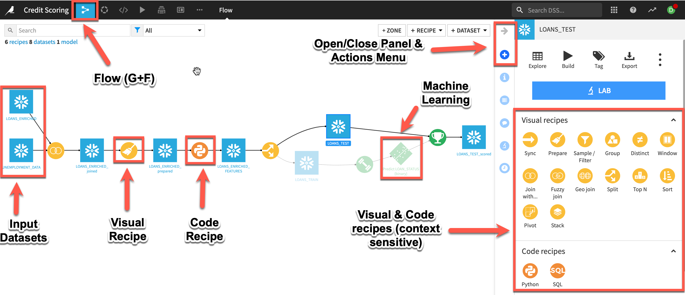
A dataset is represented by a blue square with a symbol that depicts the dataset type or connection. The initial datasets (also known as input datasets) are found on the left of the Flow. In this project, the input datasets will be the ones we just created in Snowflake.
A recipe in Dataiku DSS (represented by a circle icon with a symbol that depicts its function) can be either visual or code-based, and it contains the processing logic for transforming datasets.
Machine learning processes are represented by green icons.
The Actions Menu is shown on the right pane and is context sensitive.
Whatever screen you are currently in you can always return to the main Flow by clicking the Flow symbol from the top menu (also clicking the project name will take you back to the main Project page).
Input dataset: In the interests of time we have performed some initial steps of the data pipeline such as cleansing and transformations on the loans dataset. These steps can be created in Dataiku from the raw datasets from the Lending Club to form a complete pipeline with the data and execution happening in Snowflake
Our goal is to build an optimized machine learning model that can be used to predict the risk of default on loans for customers and advise them on how to reduce their risk. To do this, we’ll join the input datasets, perform transformations & feature engineering so that they are ready to use for building a binary classification model.
Once you’ve logged in, click on +NEW PROJECT and select Blank project to create a new project.

Duration: 5
After creating our project let’s add our datasets from Snowflake to the Flow.
+ Import Your First Dataset in the centre of the screen.
Search and import option
PC_DATAIKU_DB connection from the dropdown then click the refresh icon next to the database or schema dropdowns to populate these options.LIST TABLES
Loans_Enriched and Unemployment_Data datasets and click CREATE 2 DATASETS

(or use the keyboard shortcut G+F).
Now we have all of the raw data needed for this lab. Let’s explore what’s inside these datasets.
From the Flow, double click on the loans_enriched dataset to open it.
You can analyze column metrics to better understand your data: Either click on the column name and select Analyze or, if you wish for a quick overview of columns key statistics, select Quick Column Stats button on the top-right.

So far, your Flow only contains datasets. To take action on datasets, you need to apply recipes. The LOANS_ENRICHED and UNEMPLOYMENT_DATA datasets both contain a column of Loan IDs. Let’s join these two datasets together using a visual recipe.
LOANS_ENRICHED dataset from the Flow by single clicking on it.Join With… from the Visual recipes section of the Actions sidebar near the top right of the screen (note: click the Open Panel arrow if it is minimized and notice there are three different types of join recipe, we want Join With…).UNEMPLOYMENT_DATA as the second input dataset.
PC_DATAIKU_DB for “Store into” and Create the recipe.click on Left Join to observe the selected join type and conditions.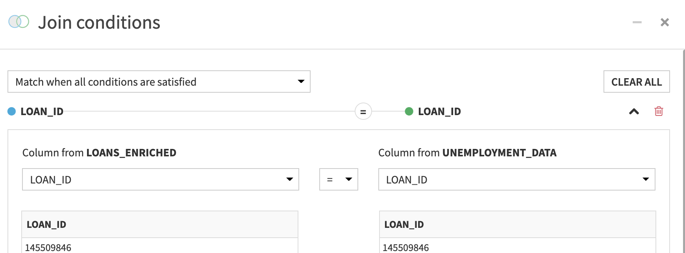
Save the recipeIn-database (SQL) is selected as the engine. You can view this underneath the Run button (Bottom left). If it is set to a different engine click on the three cogs to change itRUN and Update Schema if prompted, then return to the FlowNote: You can view the SQL query as well as the execution plan generated by selecting VIEW QUERY on the Output screen.
Your flow should now look like this

Duration: 5
Data cleaning and preparation is typically one of the most time-consuming tasks for anyone working with data. In our lab, in order to save some of that time, our main lending dataset has already been largley cleaned. In the real world this would be done by other colleagues, say, from the data analytics team collaborating on this project and you would see their work as steps in our projects flow.
Let’s take a brief look at the Prepare recipe, the workhorse of the visual recipes in Dataiku, and perform some final investigations and transformations.
Single click on the output dataset of our join from the flow and select Prepare from the visual recipes in the Actions Panel. (If the automatically generated output dataset name is starting to get unwieldy feel free to change it)In a Prepare recipe you assemble a series of steps to transform your data from a library of ~100 processors. There are a couple of ways you can select these processors to build your script. Firstly you can select these processors directly by using the +ADD A NEW STEP button on the left.
Secondly because Dataiku DSS infers meanings for each column, it suggests relevant actions in many cases. In the example below although the column is stored in Snowflake as a String Dataiku DSS recognises it as a date format so infers a Date(unparsed) meaning and suggests the Parse Date processor, by selecting the More actions menu item further suggestions are made.
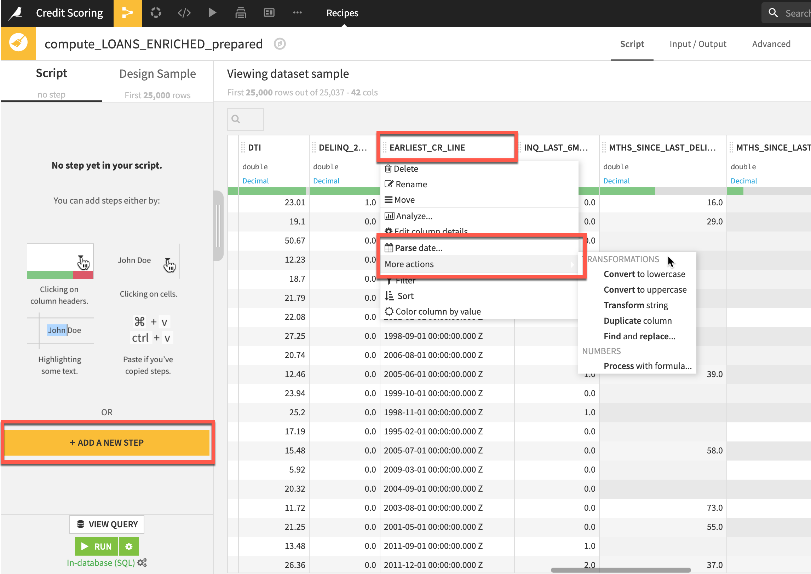
Let's try using processors with both methods, firstly via the suggested actions:
EARLIEST_CR_LINE column header and from the dropdown, select Parse dateAdd a custom format set the format to d-MMM-yyyy and click on USE DATE FORMATLocale to en_US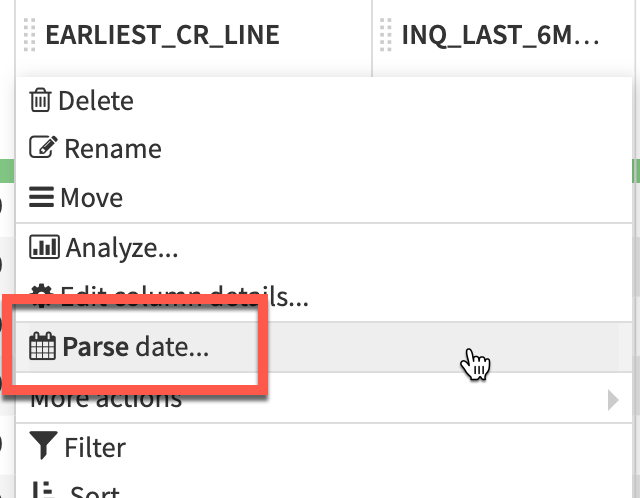


Click on the newly created column (click outside the step to action the change) and select Compute time difference
Change Until to Another Date Column and add ISSUE_DATE_PARSED as that column.
Change the unit to Years and name the new column since_Earliest_CR_LINE_years

Now we have our desired feature we can remove the two date columns.
EARLIEST_CR_LINE and select delete, do the same for EARLIEST_CR_LINE_parsedYour script steps should now look like this:
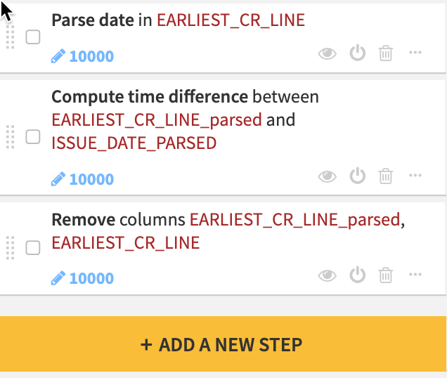
Optionally you can place the three date transformation script steps into their own group with comments to make it simple for a colleague to follow everything you have done
Let’s turn our attention to the INT_RATE column. The interest rate is likely to be a powerful predictive feature when modeling credit defaults but currently its stored as a string:
+ADD A NEW STEP button at the bottom of your script steps.Find and Replace processor either by looking in the Strings menu or using the search function.
INT_RATE as the column then click +ADD REPLACEMENT and replace % with a blank value. Ensure the Matching Mode dropdown is set to Substring
Our INT_RATE column has some suspiciously high values. Let’s use the Analyze tool again and see how it can be used to take certain actions in a Prepare recipe
INT_RATE column header dropdown, select Analyze.Remove rows outside 1.5 IQR from the menu.
As before you can optionally group and comment on these int_rate transformation steps.
In-database (SQL) engine is selected and then click RUNDuration: 5
Till now we've used visual tools but lets see how users who prefer to code can collaborate alongside their low/no code colleagues
Click on the output dataset of the prepare recipe (in this case LOANS_ENRICHED_prepared but you may have renamed your output)click on the Python Code recipe from the Actions panel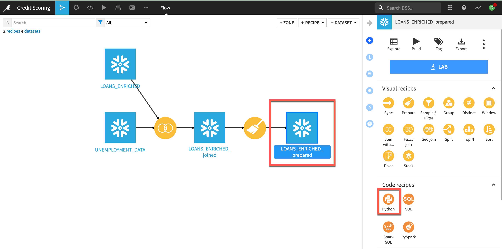
Add a new output dataset and click CREATE RECIPEDataiku DSS generates some starter code for us, we can also use code samples our colleagues have created and tagged and, if we prefer, work from Jupyter notebooks or a range of IDE’s. For this lab we will stick with the standard code editor.
change our dataframe name to df on line 811 - 15df['DEBT_AMNT'] = [d*df.INSTALLMENT.values[idx]/100.0 for idx,d in enumerate(df.DTI.values)]
df["DEBT_AMNT_NORM"] = (df.DEBT_AMNT.values - np.mean(df.DEBT_AMNT.values))/np.std(df.DEBT_AMNT.values)
df["INSTALL_NORM"] = (df.INSTALLMENT.values - np.mean(df.INSTALLMENT.values))/np.std(df.INSTALLMENT.values)
Your code should now look like this
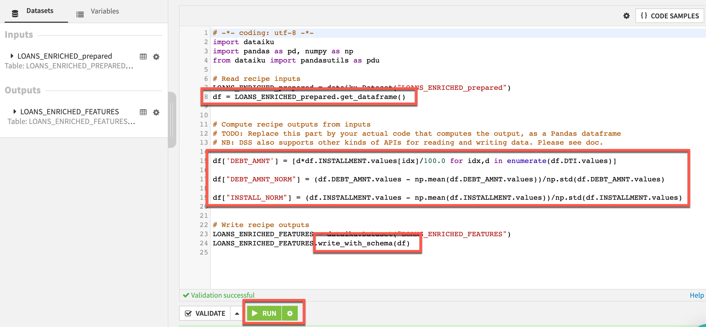
click RUNDataiku DSS allows you to create an arbitrary number of Code environments to address managing dependencies and versions when writing code in R and Python. Code environments in Dataiku DSS are similar to the Python virtual environments. In each location where you can run Python or R code (e.g., code recipes, notebooks, and when performing visual machine learning/deep learning) in your project, you can select which code environment to use.
Duration: 5
Having sufficiently explored and prepared the loans and employment data, the next stage of the AI lifecycle is to experiment with machine learning models.
This experimentation stage encompasses two key phases: model building and model assessment.
Model building: Users have full control over the choice and design of a model — its features, algorithms, hyperparameters and more.
Model assessment: Tools such as visualizations and statistical summaries allow users to compare model performance.
These two phases work in tandem to realize the idea of Responsible AI. Either through a visual interface or code, building models with DSS can be transparently done in an automated fashion. At the same time, the model assessment tools provide a window into ensuring the model is not a black box.
Before building our model first we will split our output dataset from our python step.
This is how your flow should look like before splitting 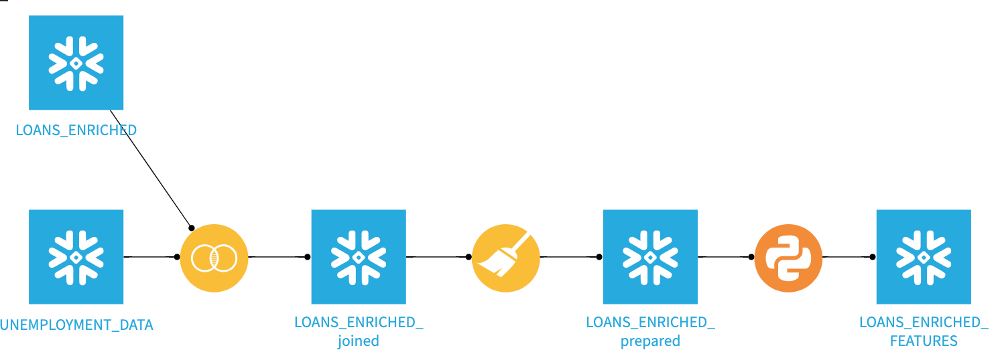
Split recipe from the Actions menu.Test and Train and click CREATE RECIPEDispatch Percentiles as the splitting strategy and have 80% go to Train and 20% to Test.ISSSUE_DATE_PARSED to sort by and then click RUN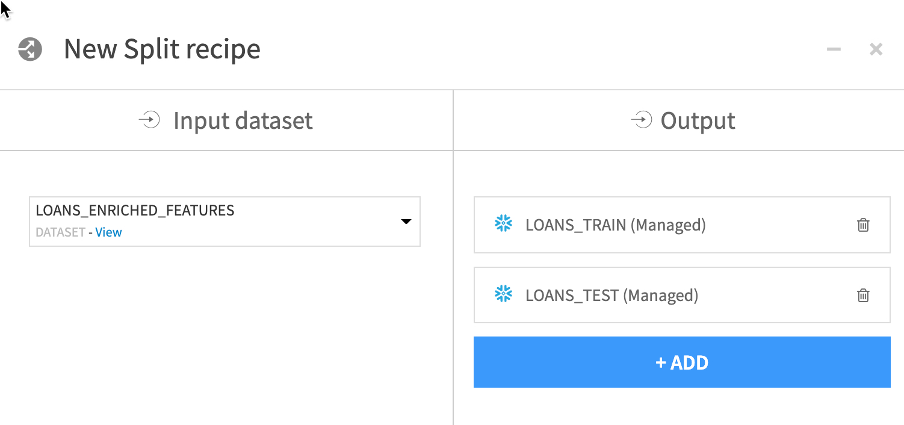
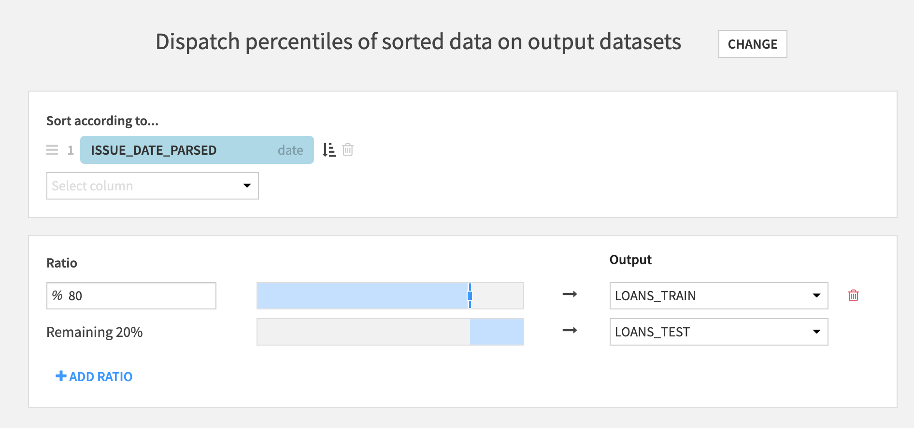
Train dataset and click the LAB button in the Actions menuAutoML Prediction and set LOAN_STATUS as the target and leave the default template of Quick Prototypes then click CREATE

When building a visual model, users can choose a template instructing DSS to prioritize considerations like speed, performance, and interpretability. Having decided on the basic type of machine learning task, you retain full freedom to adjust the default settings chosen by DSS before training any models. These options include the metric for which to optimize, what features to include, and what algorithms should be tested.
Feel free to try some experiments of your own in the Design tab. Here are some suggestions to try. Don't forget to click :
off/on to see if the Marketplace enrichment data makes a difference to our models accuracy. Click SAVE and then TRAIN in the top right after you've made your changes in DESIGN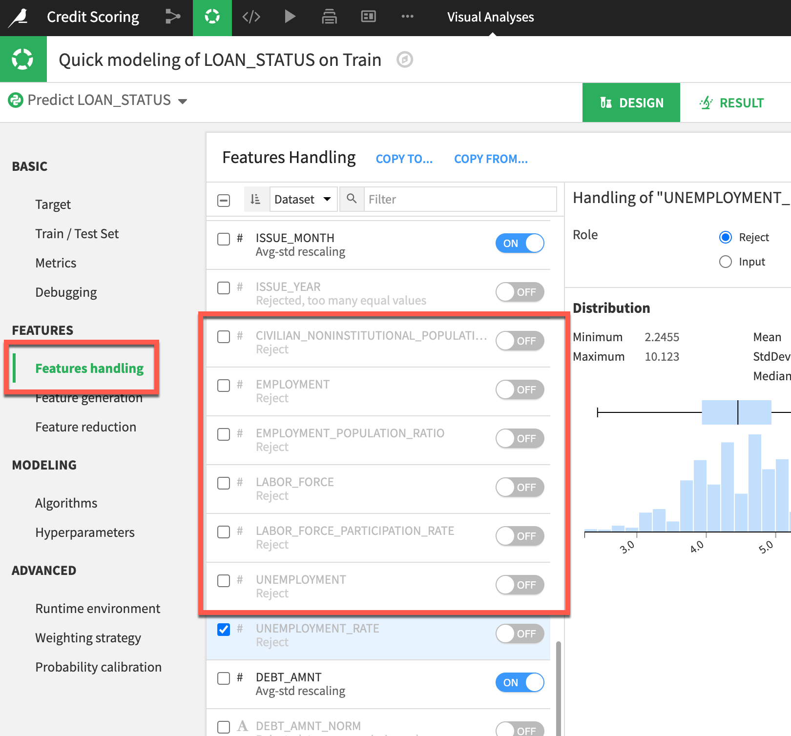
Features handling menu look at MTHS_SINCE_LAST_DELINQ, MTHS_SINCE_LAST_RECORD and MTHS_SINCE_LAST_MAJOR_DEROG. In the Distribution table we can see most cells are empty. We have various techniques available to us in the Missing Values dropdown but given that there are so few values in these columns lets just turn reject the features.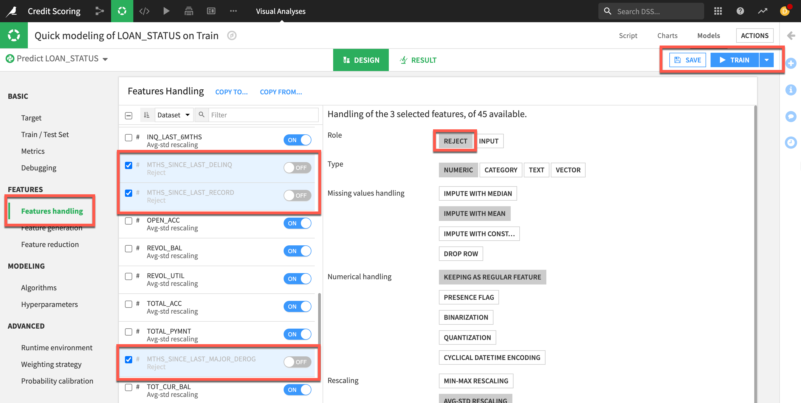
You may notice on the RESULT screen that ML Diagnostics are flagged against a model. These identify and help troubleshoot potential problems and suggest possible improvements at different stages of training and building machine learning models.
Hover your cursor over Diagnostics to see the potential issues
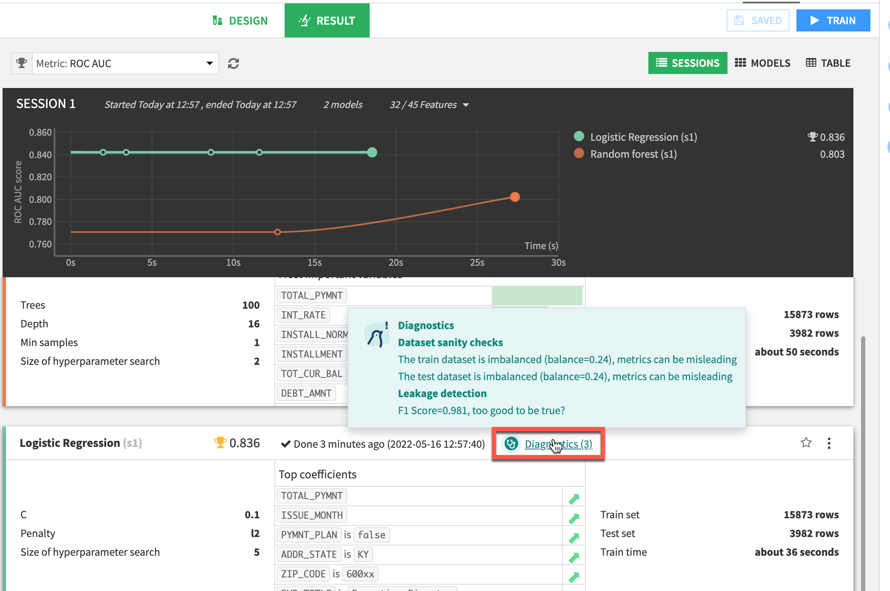
In this example I can see we have an imbalanced dataset, let's fix that.
DESIGN page and the TRAIN/TEST SET menu. Here you can rebablance your dataset.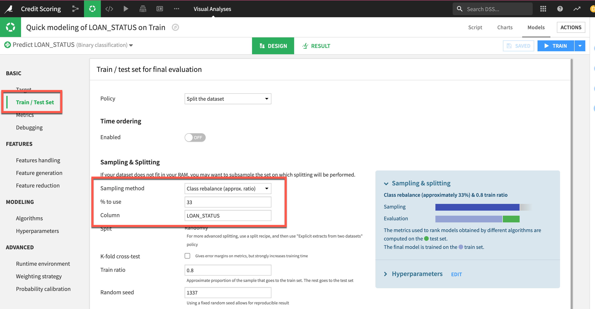
Try different Algorithms
In Runtime Environment choose Select a container configuration from the drop down for Containerized execution and run with a larger container
You can directly compare models from different experiments by selecting them via the checkbox and then selecting Compare from the ACTIONS menu.
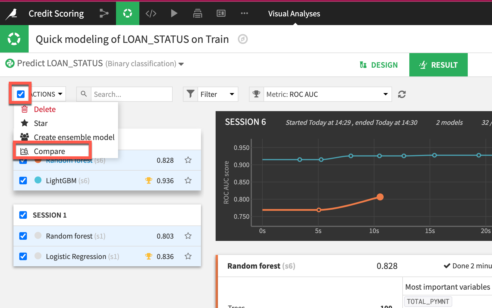
Create a new comparison and then click compare
After having trained as many models as desired, DSS offers tools for full training management to track and compare model performance across different algorithms. DSS also makes it easy to update models as new data becomes available and to monitor performance across sessions over time.
In the Result pane of any machine learning task, DSS provides a single interface to compare performance in terms of sessions or models, making it easy to find the best performing model in terms of the chosen metric.
In the example below we see an improvement between session 4 and 5 when the employment data is added and then a further minor improvement when using the LightGBM algo
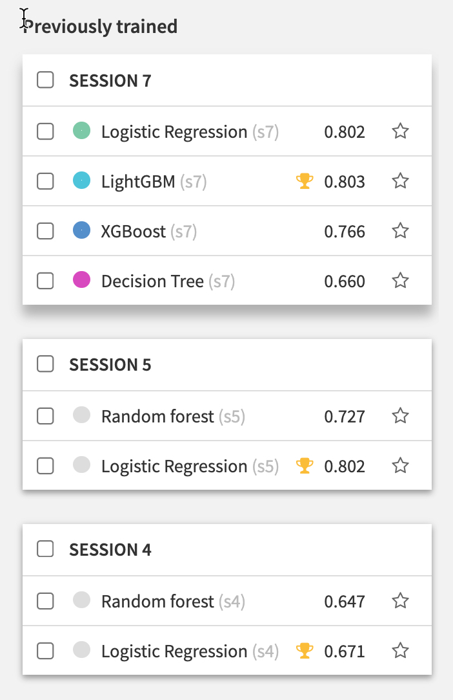
Clicking on any model produces a full report of tables and visualizations of performance against a range of different possible metrics.
Click on your best performing modelSubpopulations Analysis allows you to identify potential bias in your model by seeing how it performs across different sub-groupsInteractive Scoring allows you to run real time “what-if” analysis to understand the impact of given features
Here we can see Variable importance

Duration: 2
After experimenting with a range of models built on historic training data, the next stage is to deploy our chosen model to score new, unseen records.
For many AI applications, batch scoring, where new data is collected over some period of time before being passed to the model, is the most effective scoring pattern. Deploying a model creates a “saved” model in the Flow, together with its lineage. A saved model is the output of a Training recipe which takes as input the original training data used while designing the model.
DEPLOY, accept the default model name and click CREATEYour flow should now look like this:
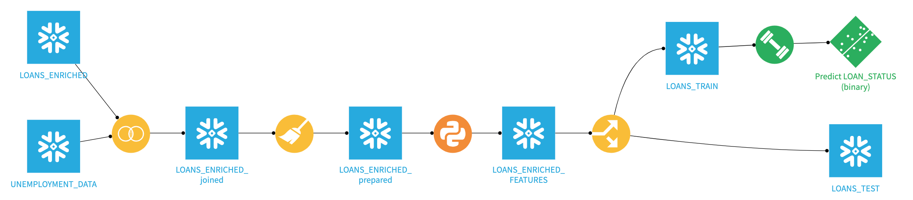
Duration: 2
LOANS_TEST dataset and the Score recipe from the actions menuIn-Database (Snowflake native) is selected as the engine in order to use the Java UDF capability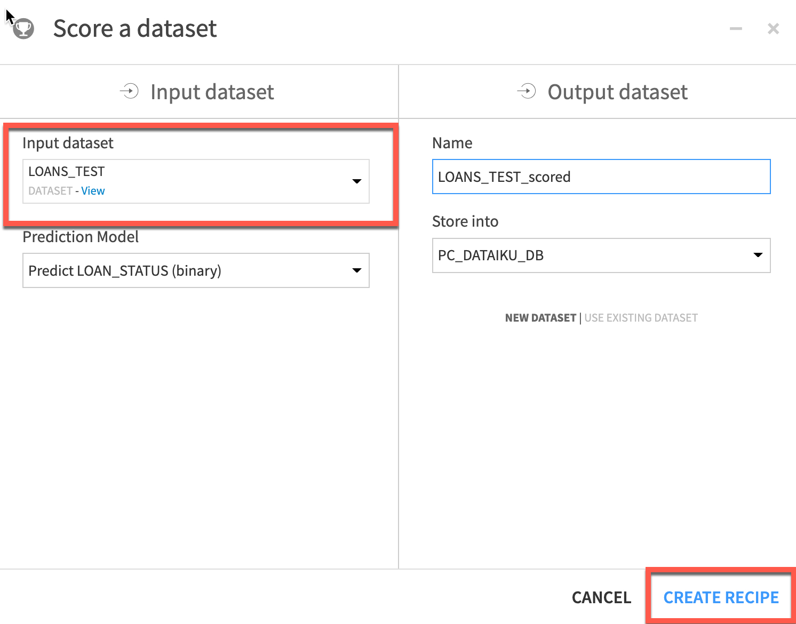

We can now We can see the results back on the Snowflake tab. If you hit the refresh icon near the top left of our screen by your databases, you should see the CREDIT_SCORING_LOANS_TEST_SCORED table that was created once we kicked off our prediction job.
Preview Data will give you glimplse of additional column added to the list.
USE ROLE SYSADMIN;
USE DATABASE PC_DATAIKU_DB;
USE WAREHOUSE PC_DATAIKU_WH;
SELECT *
FROM CREDIT_SCORING_LOANS_TEST_SCORED
LIMIT 10;
Additional info,
SELECT
EMP_TITLE ,
SUM(CASE WHEN "prediction" = 'ok' THEN 1 ELSE 0 END) AS prediction_yes,
SUM(CASE WHEN "prediction" = 'incident' THEN 1 ELSE 0 END) AS prediction_no
FROM CREDIT_SCORING_LOANS_TEST_SCORED
GROUP BY
EMP_TITLE
order by prediction_yes DESC;
Duration: 2
Congratulations you have now successfully built, deployed and scored your model results back to Snowflake. Your final flow should look like this.
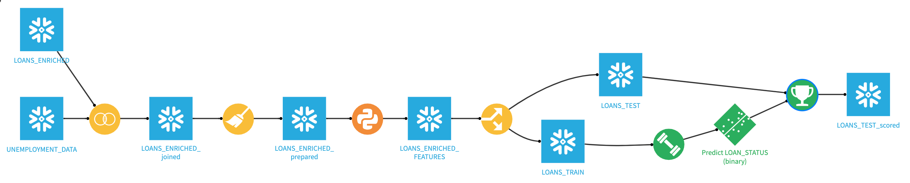
Duration: 5 To be added soon